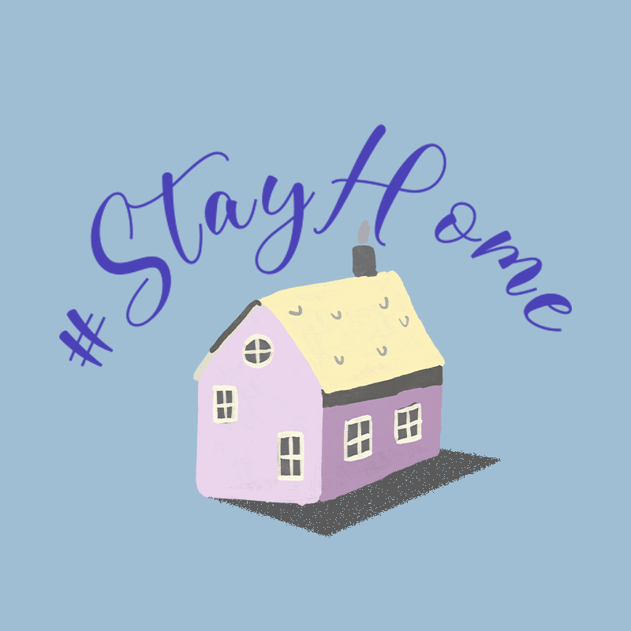
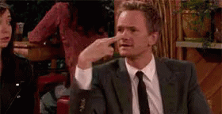
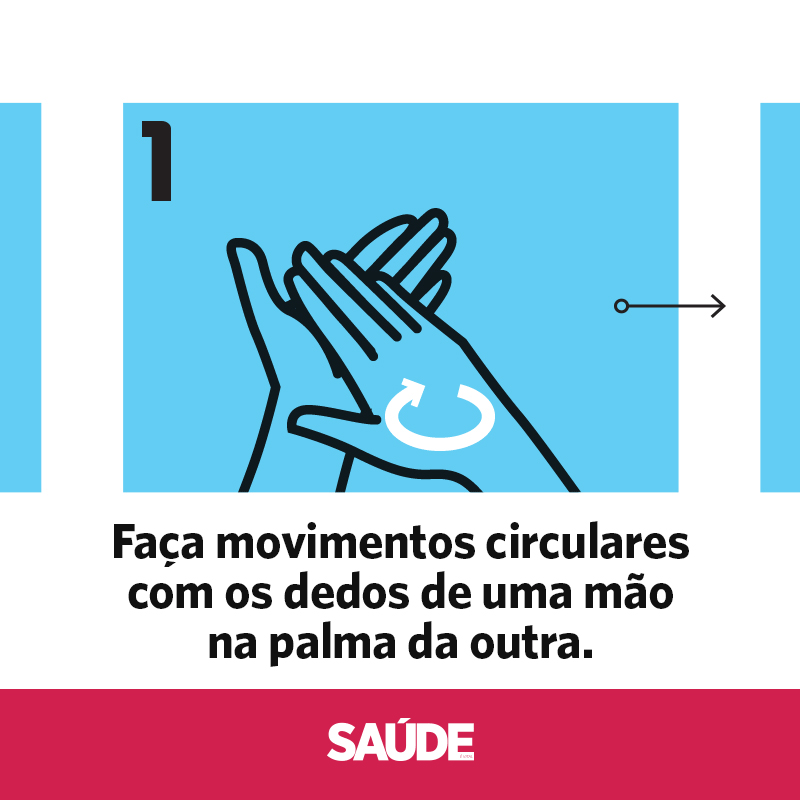

COMO SE PREVENIR - O QUE FAZER DE ACORDO COM O MINISTÉRIO DA SAÚDE
PÁGINA INICIAL
Como se proteger
As recomendações de prevenção à COVID-19 são as seguintes:
- Lave com frequência as mãos até a altura dos punhos, com água e sabão, ou então higienize com álcool em gel 70%.
- Ao tossir ou espirrar, cubra nariz e boca com lenço ou com o braço, e não com as mãos.
- Evite tocar olhos, nariz e boca com as mãos não lavadas.
- Ao tocar, lave sempre as mãos como já indicado.
- Mantenha uma distância mínima de cerca de 2 metros de qualquer pessoa tossindo ou espirrando.
- Evite abraços, beijos e apertos de mãos. Adote um comportamento amigável sem contato físico, mas sempre com um sorriso no rosto.
- Higienize com frequência o celular e os brinquedos das crianças.
- Não compartilhe objetos de uso pessoal, como talheres, toalhas, pratos e copos.
- Mantenha os ambientes limpos e bem ventilados.
- Evite circulação desnecessária nas ruas, estádios, teatros, shoppings, shows, cinemas e igrejas. Se puder, fique em casa.
- Se estiver doente, evite contato físico com outras pessoas, principalmente idosos e doentes crônicos, e fique em casa até melhorar.
- Durma bem e tenha uma alimentação saudável.
- Utilize máscaras caseiras ou artesanais feitas de tecido em situações de saída de sua residência.

TUTORIAL DE COMO LAVAR AS MÃOS
E SE FICAR DOENTE?

Caso você se sinta doente, com sintomas de gripe, evite contato físico com outras pessoas, principalmente idosos e doentes crônicos e fique em casa por 14 dias.
Só procure um hospital de referência se estiver com falta de ar.
Em caso de diagnóstico positivo para COVID-19, siga as seguintes recomendações:
- Fique em isolamento domiciliar.
- Utilize máscara o tempo todo.
- Se for preciso cozinhar, use máscara de proteção, cobrindo boca e nariz todo o tempo.
- Depois de usar o banheiro, nunca deixe de lavar as mãos com água e sabão e sempre limpe vaso, pia e demais superfícies com álcool ou água sanitária para desinfecção do ambiente.
- Separe toalhas de banho, garfos, facas, colheres, copos e outros objetos apenas para seu uso.
- O lixo produzido precisa ser separado e descartado.
- Sofás e cadeiras também não podem ser compartilhados e precisam ser limpos frequentemente com água sanitária ou álcool 70%.
- Mantenha a janela aberta para circulação de ar do ambiente usado para isolamento e a porta fechada, limpe a maçaneta frequentemente com álcool 70% ou água sanitária.
- Manter a distância mínima de 1 metro entre o paciente e os demais moradores.
- Limpe os móveis da casa frequentemente com água sanitária ou álcool 70%.
- Se uma pessoa da casa tiver diagnóstico positivo, todos os moradores ficam em isolamento por 14 dias também.
- Caso outro familiar da casa também inicie os sintomas leves, ele deve reiniciar o isolamento de 14 dias. Se os sintomas forem graves, como dificuldade para respirar, ele deve procurar orientação médica.

Acesse também:
OUTRAS PANDEMIASDADOS SOBRE A PANDEMIA
SITUAÇÃO EM ALAGOAS
A OMS E O NOVO CORONAVÍRUS
FIQUE EM CASA
LISTA DE FILMES PARA VER NA QUARENTENA